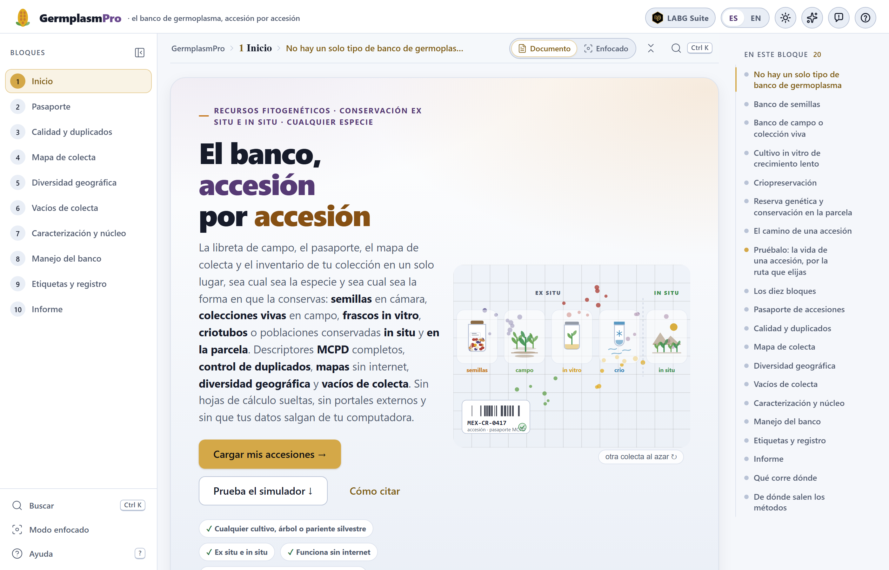
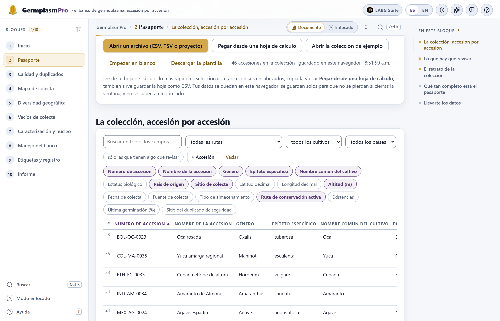
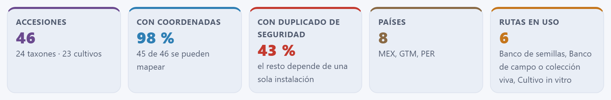

La cita del programa es la misma que da el botón Cómo citar de la portada de la app. El programa también puede usarse en línea, sin instalar nada, en https://luisangelbg.github.io/GermplasmPro/.
GermplasmPro funciona por completo dentro de tu navegador. El pasaporte, la caracterización y los registros de manejo que cargas se leen en tu computadora y nunca se envían a ningún servidor; la colección se guarda en el almacenamiento local de ese mismo navegador para que no se pierda al cerrar la ventana. Puedes trabajar con coordenadas de poblaciones sensibles o con datos de familias custodias sin que nada salga de tu equipo, y sin internet: los mapas usan geometrías incluidas en el programa.
Las ilustraciones, los diagramas y las capturas de este manual son originales: se generaron con el propio programa o con código escrito para el manual. La colección de ejemplo es ficticia: los sitios son localidades reales con coordenadas aproximadas, pero las accesiones, las personas, las existencias y las fechas son inventadas, y la caracterización de ejemplo se genera al azar con semilla fija. Las constantes de viabilidad incluidas son las publicadas para Zea mays; en otras especies son un punto de partida editable. Los contornos de los mapas son de Natural Earth (dominio público).
El manual sigue el mismo orden que la app: diez bloques numerados que aparecen, de arriba abajo, en la barra lateral de la izquierda. Cada capítulo explica un bloque y lleva su mismo número —el capítulo 6 es el Bloque 6, y sus secciones, figuras y tablas se numeran 6.1, 6.2…—. Cada uno empieza con la idea de manejo de recursos fitogenéticos que el bloque necesita, sigue con lo que la pantalla calcula y cómo se lee, y termina con lo que conviene revisar antes de seguir. Esta introducción no lleva número: sus secciones van como I.1, I.2…
El color del bloque aparece en la apertura de su capítulo, en el número de cada sección, en la pestaña del borde de la hoja y en el índice, y es el mismo de la franja de la portada. Así sabes de un vistazo en qué parte de la app estás.
| Bloque | Nombre en la app | Qué hace |
|---|---|---|
| 1 | Inicio | Portada, los cinco tipos de banco, el comportamiento de la semilla y el simulador «la vida de una accesión», que sigue al material y su diversidad durante décadas |
| 2 | Pasaporte | Traer la lista de accesiones (archivo, pegado o plantilla), reconocer las columnas como descriptores MCPD v2.1, validarlas, editarlas, retratar la colección y exportarla |
| 3 | Calidad y duplicados | Coordenadas que no caen en el país declarado, nombres y catálogos desordenados, correcciones propuestas con tu visto bueno y la misma colecta entrada dos veces |
| 4 | Mapa de colecta | Las accesiones en el mapa, sin internet, coloreadas por especie, altitud, año o ruta; cuántas caen en cada entidad y en cada país |
| 5 | Diversidad geográfica | Riqueza, índices de diversidad y números de Hill por unidad geográfica, rarefacción, estimadores de riqueza, semejanza entre regiones, prueba de Mantel y gradiente altitudinal |
| 6 | Vacíos de colecta | La rejilla de lo que falta, un índice de prioridad transparente, la ruta para la próxima colecta, los riesgos de lo que ya tienes y el conjunto mínimo por complementariedad |
| 7 | Caracterización y núcleo | Descriptores morfológicos mixtos, distancia de Gower, coordenadas principales, agrupamiento y una colección núcleo validada |
| 8 | Manejo del banco | Viabilidad por lote con la ecuación de Ellis y Roberts, qué hay que hacer y cuándo en cada ruta, cuántas plantas y semillas regenerar, y la carga de trabajo de los próximos 25 años |
| 9 | Etiquetas y registro | Etiquetas con código de barras Code 128 y QR, en formatos medidos en milímetros; listas de siembra, vales de distribución y el libro de registro |
| 10 | Informe | El informe del estado de la colección, con los métodos redactados, para imprimir o guardar en PDF; el paquete .zip y el pasaporte en MCPD y en Darwin Core |
Aclaraciones y consejos prácticos que ahorran tiempo.
Lo que puede cambiar tus decisiones si se pasa por alto.
La idea detrás de un cálculo, sin fórmulas innecesarias.
Un caso con la colección de ejemplo del programa, paso a paso.
| Si el resultado cae en este caso… | entonces esta es la lectura recomendada. |
Son guías para interpretar, no leyes: lo que sabes de tu especie, de tu banco y de tus sitios siempre manda.
| Así se escribe | Significa |
|---|---|
| Abrir la colección de ejemplo | Un botón, casilla o menú de la app, con su texto tal como aparece en pantalla en español. |
| Bloque 3›¿Es la misma colecta dos veces? | Una ruta: abre lo primero y dentro busca lo segundo. |
ACCENUMB, GP_CONS, .csv | Una clave de descriptor, un nombre de archivo o un valor que se escribe tal cual. Las claves que empiezan con GP_ son la extensión de GermplasmPro, que no forma parte de MCPD. |
| MEX-ZM-0039 · Tuxpeño de la costa | Una accesión de la colección de ejemplo, con su número y su nombre como aparecen en la tabla del Bloque 2. |
| 25 000 m · 98 % · 0.14 | Millares separados con espacio y decimales con punto, como en la app. |
Los resultados del texto salen de correr la app con la colección de ejemplo del Bloque 2 (46 accesiones, con sus errores sembrados) y, en el Bloque 7, con la caracterización de ejemplo de 12 descriptores. Los ejemplos tienen semilla fija y los cálculos son deterministas: con esos datos verás los mismos números. Si un capítulo parte de otro estado, como la colección ya corregida, lo dice antes de dar la cifra.
Qué es el programa, qué preguntas del trabajo diario de un banco de germoplasma responde, qué datos acepta y cómo se recorre de principio a fin. Incluye las cinco ideas que sostienen todo lo demás —la accesión y su pasaporte, la ruta que le toca a cada especie, el duplicado de seguridad, los dos relojes de la conservación y lo que tienes frente a lo que te falta— y una lista honesta de lo que el programa no hace.
GermplasmPro es una plataforma para el trabajo diario de una colección de recursos fitogenéticos de la libreta de campo al informe: ordena el pasaporte de cada accesión con los descriptores multicultivo de FAO/Bioversity, encuentra los errores y los duplicados, dibuja el mapa de colecta, mide la diversidad geográfica, señala dónde falta colectar, arma una colección núcleo a partir de la caracterización, proyecta la viabilidad de cada lote y avisa qué hay que regenerar, imprime etiquetas con código de barras y redacta un informe con los métodos escritos.
Sirve para cualquier especie y para todos los tipos de banco. Ex situ: el banco de semillas, el banco de campo o colección viva, el cultivo in vitro de crecimiento lento y la criopreservación; el banco de ADN se registra en el pasaporte. In situ: la reserva genética de parientes silvestres y la conservación en la parcela de quien siembra. Una colección real casi siempre combina varias de esas rutas, y la app las maneja a la vez. El maíz y el chayote aparecen a menudo en las pantallas y en este manual porque son buenos ejemplos de dos mundos —una semilla ortodoxa que se guarda en frasco y un cultivo que sólo se conserva vivo—, no porque el programa sea para ellos.
Todo ocurre dentro del navegador. No hay que instalar nada, no se necesita saber programar y los datos no salen de la computadora. Está escrito para curadores de bancos, técnicos de campo, tesistas y responsables de colecciones institucionales o comunitarias: sabe que un pasaporte llega casi siempre de una hoja de cálculo con encabezados a la mano, que la misma colecta suele estar dos veces con el nombre escrito distinto, que una longitud pierde el signo al pasar de un programa a otro, que un lote que lleva años sin prueba de germinación es un riesgo invisible y que una parcela in situ que nadie visita también se pierde.
Cada bloque de la app contesta una pregunta que quien maneja una colección se hace de verdad. Estas son, en el orden en que se recorren:
| Bloque | La pregunta | Con qué la contesta |
|---|---|---|
| 1 | ¿Qué tipo de banco le conviene a mi especie? ¿Qué le pasa a una accesión con los años? | Los cinco tipos de banco, el comportamiento de la semilla y un simulador de la viabilidad y de la diversidad a lo largo de décadas |
| 2 | ¿Qué tengo, de dónde vino y cómo se conserva? ¿Está completo mi pasaporte? | Lectura de la lista, reconocimiento de columnas, validación campo por campo y entre campos, retrato de la colección y completitud por descriptor |
| 3 | ¿Mis datos son confiables? ¿Tengo la misma colecta dos veces? | Coordenadas contra el país, nombres y catálogos, correcciones propuestas y pares de posibles duplicados con su puntuación |
| 4 | ¿Dónde colecté? ¿Cuántas accesiones hay por entidad y por país? | El mapa de colecta sin internet, con color por especie, altitud, año o ruta, y las tablas por entidad y por país |
| 5 | ¿Dónde está la diversidad de mi colección? ¿Cuánta me falta por ver? | Riqueza e índices por unidad geográfica, rarefacción, estimadores de riqueza, semejanza entre regiones y gradiente altitudinal |
| 6 | ¿A dónde voy en la próxima colecta? ¿Qué puedo perder de lo que ya tengo? | La rejilla de vacíos, el índice de prioridad, la ruta de colecta, los riesgos de la colección y el conjunto mínimo |
| 7 | ¿Qué accesiones se parecen? ¿Con cuáles me quedo si no puedo evaluarlas todas? | Distancia de Gower con datos mixtos, coordenadas principales, grupos y una colección núcleo con su validación |
| 8 | ¿Qué lote hay que probar o regenerar, y cuándo? ¿Cuántas plantas siembro? | Viabilidad proyectada por lote, alertas y plan de trabajo por ruta, cálculo de plantas y semillas, y carga de trabajo a 25 años |
| 9 | ¿Cómo identifico cada sobre, frasco, maceta o criotubo? ¿Cómo registro lo que sale? | Etiquetas con Code 128 y QR, listas de siembra, vales de distribución y el libro de registro |
| 10 | ¿Cómo informo del estado de la colección? ¿Cómo comparto el pasaporte? | Informe con métodos redactados y referencias, paquete .zip, pasaporte en MCPD y en Darwin Core |
No hace falta ser curador de un banco para usar la app, pero hay cinco ideas que vuelven una y otra vez. Entenderlas hace que los resultados dejen de ser tablas y se vuelvan decisiones.
Una accesión es una muestra distinta de una especie que el banco conserva y maneja como unidad: una colecta de maíz en una comunidad, un clon de papa, una población silvestre en su reserva. Lo que la hace útil no es el material, sino lo que se sabe de él: quién es, de dónde vino, quién y cuándo la colectó, qué tipo de material es y cómo se conserva. Eso es el pasaporte, y los descriptores multicultivo de FAO/Bioversity (MCPD v2.1) son la forma de escribirlo que entienden todos los bancos y sistemas de información. La app reconoce sus 42 descriptores y les suma siete campos propios, los que empiezan con GP_, para la ruta de conservación activa, el sitio y el custodio in situ, las existencias, la última germinación y la última regeneración. Todos los bloques leen de ese pasaporte; por eso el Bloque 2 es la puerta de entrada.
Un banco de semillas sólo sirve para la semilla ortodoxa, que tolera secarse y congelarse. La intermedia no tolera el frío profundo, la recalcitrante no tolera ni secarse ni congelarse, y en los cultivos de propagación vegetativa la semilla no reproduce el clon. Para ellos están el campo, el frasco in vitro y el nitrógeno líquido, y nada sustituye a la conservación in situ, donde la población sigue evolucionando. La app maneja las cinco rutas y adapta a cada una alertas, plazos y etiquetas.
El duplicado de seguridad es una muestra de la misma accesión guardada en otra institución, para que un incendio, un corte de luz largo o una plaga no se lleven el único ejemplar. El pasaporte lo registra en DUPLSITE, y la app cuenta qué parte de la colección lo tiene. El otro duplicado, el accidental —la misma colecta entrada dos veces al catálogo, con el nombre escrito distinto—, es lo contrario: no protege nada, infla la colección y desordena los análisis. Distinguir uno de otro, y encontrar el segundo antes de medir la diversidad, es parte del trabajo del Bloque 3.
El primero es el del material: la semilla envejece en la cámara a un ritmo que depende de su contenido de humedad y de la temperatura, y que la ecuación de viabilidad de Ellis y Roberts permite proyectar; las plantas del campo mueren, los frascos se contaminan, los explantes congelados se recuperan sólo en parte. El segundo es el de la integridad genética: cada regeneración, cada subcultivo y cada generación en la parcela es un cuello de botella que vuelve a sortear las frecuencias de los alelos, y los raros son los primeros en perderse. De ahí la regla del banco: regenerar pocas veces y con muchos individuos. El simulador del Bloque 1 muestra los dos relojes lado a lado; el Bloque 8 los lleva a cada lote de tu colección.
Una colección vale por la diversidad que representa, y esa diversidad tiene geografía: está repartida entre regiones, altitudes y sitios. El Bloque 5 mide cuánta hay donde ya colectaste y cuánta te falta por ver con el mismo esfuerzo; el Bloque 6 dibuja la rejilla de lo que nunca se ha colectado y propone a dónde ir, con un índice de prioridad cuyos componentes se ven y se pueden mover. En los dos casos el análisis es geográfico y de colección: cuenta accesiones, especies y sitios, no clima ni suelo.
.csv, .tsv o .txt, se pega directamente desde una hoja de cálculo, se escribe en la plantilla guiada del diálogo de pegado o se empieza en blanco. Los encabezados pueden venir en español, en inglés o con la clave MCPD: la app propone qué descriptor es cada columna y tú lo confirmas..json, que devuelve la colección tal como estaba..csv, en dos versiones: sólo con los descriptores MCPD, para enviarlo a cualquier sistema, o completo, con la extensión GP_, para no perder el manejo interno. Y el proyecto en .json..csv de cada bloque: los puntos del mapa con su entidad y su celda, los índices de diversidad, la ruta de colecta, el plan de trabajo del banco..html que se abre en cualquier navegador y se imprime o guarda en PDF, con una sección por análisis, los métodos redactados a partir de lo que de verdad se corrió y sus referencias; y un .zip con todo, que incluye el pasaporte en MCPD y en Darwin Core.Una computadora con un navegador reciente —Edge, Chrome, Firefox o Safari de los últimos dos o tres años— y la carpeta del programa. No hay instalación: se copia la carpeta y se abre index.html con doble clic. También funciona desde una memoria USB y en una computadora sin internet, y en línea en https://luisangelbg.github.io/GermplasmPro/.
Las accesiones se guardan solas en el navegador de esa computadora (en su almacenamiento local); junto al contador del Bloque 2 aparece la hora del último guardado, y al volver a abrir la app la colección sigue ahí. Es sólo una comodidad: el respaldo de verdad es el proyecto .json que se descarga con Guardar el proyecto (.json), que se abre en cualquier otra máquina con Abrir un archivo (CSV, TSV o proyecto). El botón Vaciar de la tabla borra lo guardado, después de pedir confirmación.

| Elemento | Para qué sirve |
|---|---|
| La barra de bloques | A la izquierda, los diez bloques numerados, siempre visibles. El activo va resaltado en oro; el contador de arriba (1/10, 2/10…) y la palomita junto a cada número dicen cuántos llevas. Ningún bloque está cerrado: se puede saltar a cualquiera en cualquier momento. La barra se contrae con su botón o con la tecla [. |
| La ruta y los modos de lectura | Sobre el contenido, la ruta GermplasmPro › bloque › sección dice dónde estás. Documento muestra todas las secciones del bloque una tras otra; Enfocado, una a la vez, con Anterior y Siguiente (o Alt+← y Alt+→). |
| En este bloque | El índice de la derecha: las secciones del bloque, con la actual marcada. Un clic lleva a cada una. En las secciones que tienen figuras aparece además el botón para abrirlas en el estudio de figuras. |
| Buscar · Ctrl K | Una paleta que encuentra bloques, secciones, controles y figuras por su nombre, con los recientes primero. |
| Las tarjetas | Cada bloque se divide en secciones numeradas —«1 · Correcciones que la app puede hacer por ti», «2 · ¿El punto cae donde dice?»…— que se leen de arriba abajo. Las primeras suelen ser los datos y supuestos; las siguientes, los resultados. |
| Los recuadros de resultados | Una fila de cifras grandes con su etiqueta y una línea de contexto debajo, como las del retrato de la colección (figura I.3). Son el resumen de la sección: lo que se diría en una frase. |
| Los botones de exportar | Junto a cada mapa, gráfica o tabla: Exportar SVG, Exportar PNG (2×), Tabla en CSV… Lo que descargan es lo que se ve. |
| Anterior · Siguiente | Al pie de cada bloque, los botones que llevan al bloque de antes y al de después, con su número y su nombre. |
| Ayuda y atajos | El botón Ayuda de la barra lateral y el signo de interrogación de la barra superior muestran los atajos de teclado; Modo enfocado cambia el modo de lectura desde la misma barra. |

El botón Abrir la colección de ejemplo del Bloque 2 carga un banco pequeño pero realista, el mismo con el que se ilustra todo este manual. Es ficticio: los sitios de colecta son localidades reales con coordenadas aproximadas, pero las accesiones, los números, los custodios, las existencias y las fechas son inventados. Sirve para aprender la app, para ver qué hace cada bloque antes de cargar tu colección y para reproducir las cifras del manual.

MX mal escrito a propósito, y las seis «rutas» cuentan por separado la reserva genética y la parcela, que son las dos caras de la conservación in situ.| Qué trae | Cuánto |
|---|---|
| Accesiones | 46, de 24 taxones y 18 géneros: maíces criollos y sus parientes silvestres (18 accesiones de Zea mays), frijoles, calabazas, chiles, amarantos, tomate de cáscara, papas, oca, yuca, agave, vainilla, aguacate, cacao, café, chayote, encino, trigo y cebada. |
| Países de origen | 7: México (37 accesiones), Guatemala, Perú, Bolivia, Colombia, Etiopía e India; más una accesión con el país escrito MX. |
| Rutas de conservación | Las cinco: banco de semillas (28), banco de campo o colección viva (8), cultivo in vitro (3), criopreservación (1) e in situ, con 2 accesiones en reserva genética y 3 en la parcela de familias custodias. Una accesión queda sin ruta, porque su único código de almacenamiento no existe. |
| Coordenadas | 45 de las 46 accesiones se pueden mapear (98 %). |
| Duplicado de seguridad | 20 de las 46 lo tienen en otra institución (43 %). |
| Caracterización (Bloque 7) | Con Usar la caracterización de ejemplo: 12 descriptores para las 46 accesiones —seis cuantitativos, cuatro cualitativos y dos ordinales—, con alrededor de un 8 % de celdas vacías, como en una libreta de campo real. |
La colección trae a propósito los errores típicos de un archivo real, para que los Bloques 2 y 3 tengan qué encontrar:
MX) y una altitud de 25 000 m en la misma accesión;Con la colección recién cargada, la validación del Bloque 2 informa 3 errores y 26 avisos en 21 de las 46 accesiones; el Bloque 3 encuentra el punto fuera de su país, propone 4 correcciones y reúne los dos grupos de duplicados.
El orden de los bloques es el orden en que de verdad ocurre el trabajo de una colección: primero el pasaporte, después la limpieza, luego el análisis de lo que tienes y de lo que te falta, y al final el manejo del material vivo y el papeleo. No es obligatorio recorrerlo completo: un inventario termina en el Bloque 3; un plan de colecta necesita los Bloques 2 a 6; el trabajo de la cámara fría, los Bloques 2, 8 y 9. Todos los bloques leen la misma colección, así que lo que se corrige en uno lo ven los demás.
Si cargas otra colección en el Bloque 2, todo se rehace y las palomitas de la barra lateral se borran. Si aplicas una corrección en el Bloque 3, el mapa, la diversidad y los vacíos la toman al abrirlos. El informe del Bloque 10 se redacta con lo que exista en ese momento: por eso conviene generarlo al final y volver a generarlo si se tocó algo.
.json, y el intercambio con otros sistemas, los archivos MCPD y Darwin Core..xlsx no se abre a propósito: se guarda como .csv o se copia y pega el bloque de celdas. Eso es lo que le permite abrirse con doble clic y funcionar sin internet.